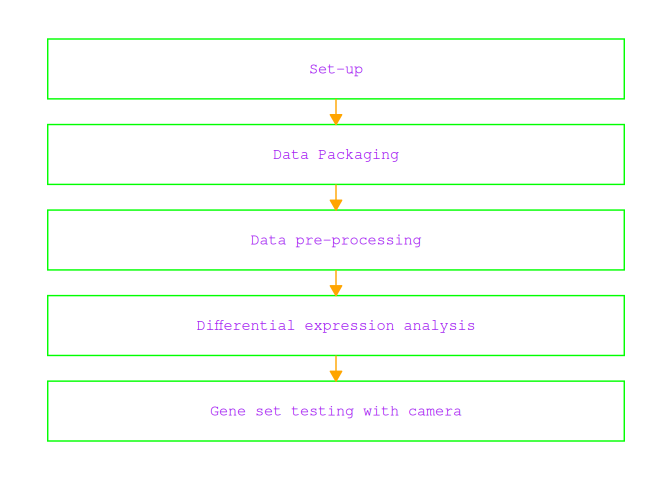
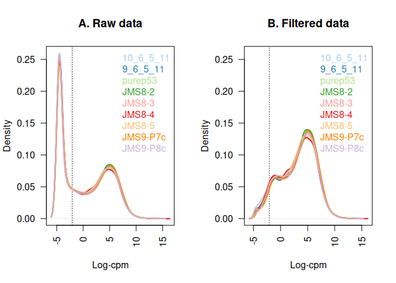
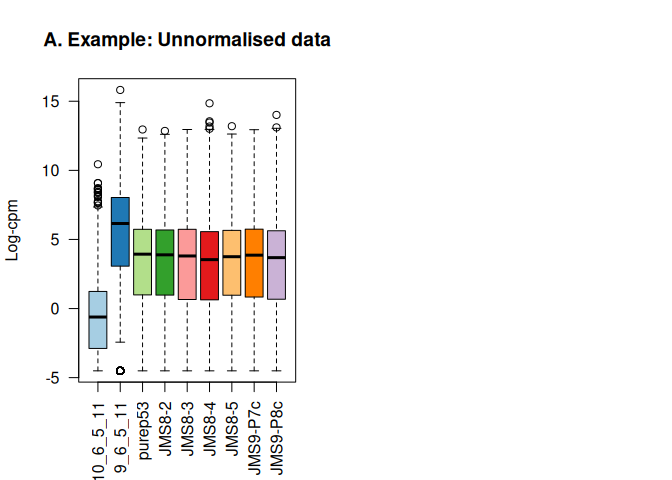
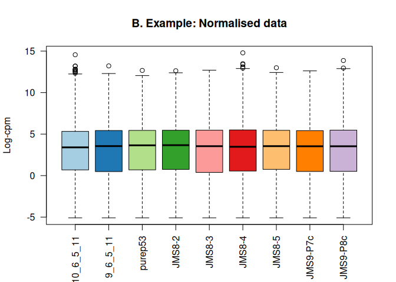
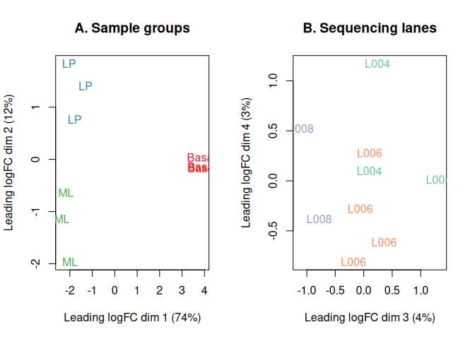

RNA-seq analysis with RNASeq123 workflow
Kate, Jessica, Kardam
title: “RNA-seq analysis with RNASeq123 workflow” author: “Kate, Jessica, Kardam” bibliography: References- BIFX 551 BioConductor Project.bib format: gfm: output-file: README.md execute: echo: false eval: true revealjs: slide-level: 4 execute: echo: false eval: true — — Load needed packages:
Loading required package: AnnotationDbi
Loading required package: stats4
Loading required package: BiocGenerics
Loading required package: generics
Attaching package: 'generics'
The following objects are masked from 'package:base':
as.difftime, as.factor, as.ordered, intersect, is.element, setdiff,
setequal, union
Attaching package: 'BiocGenerics'
The following object is masked from 'package:limma':
plotMA
The following objects are masked from 'package:stats':
IQR, mad, sd, var, xtabs
The following objects are masked from 'package:base':
anyDuplicated, aperm, append, as.data.frame, basename, cbind,
colnames, dirname, do.call, duplicated, eval, evalq, Filter, Find,
get, grep, grepl, is.unsorted, lapply, Map, mapply, match, mget,
order, paste, pmax, pmax.int, pmin, pmin.int, Position, rank,
rbind, Reduce, rownames, sapply, saveRDS, table, tapply, unique,
unsplit, which.max, which.min
Loading required package: Biobase
Welcome to Bioconductor
Vignettes contain introductory material; view with
'browseVignettes()'. To cite Bioconductor, see
'citation("Biobase")', and for packages 'citation("pkgname")'.
Loading required package: IRanges
Loading required package: S4Vectors
Attaching package: 'S4Vectors'
The following object is masked from 'package:utils':
findMatches
The following objects are masked from 'package:base':
expand.grid, I, unname
Attaching package: 'IRanges'
The following object is masked from 'package:grDevices':
windows
Loading required package: OrganismDbi
Loading required package: GenomicFeatures
Loading required package: GenomeInfoDb
Loading required package: GenomicRanges
Loading required package: GO.db
Loading required package: org.Mm.eg.db
Loading required package: TxDb.Mmusculus.UCSC.mm10.knownGene
Warning: package 'gplots' was built under R version 4.5.2
---------------------
gplots 3.3.0 loaded:
* Use citation('gplots') for citation info.
* Homepage: https://talgalili.github.io/gplots/
* Report issues: https://github.com/talgalili/gplots/issues
* Ask questions: https://stackoverflow.com/questions/tagged/gplots
* Suppress this message with: suppressPackageStartupMessages(library(gplots))
---------------------
Attaching package: 'gplots'
The following object is masked from 'package:IRanges':
space
The following object is masked from 'package:S4Vectors':
space
The following object is masked from 'package:stats':
lowess
Loading required package: RColorBrewer
Loading required package: R.utils
Loading required package: R.oo
Loading required package: R.methodsS3
R.methodsS3 v1.8.2 (2022-06-13 22:00:14 UTC) successfully loaded. See ?R.methodsS3 for help.
R.oo v1.27.1 (2025-05-02 21:00:05 UTC) successfully loaded. See ?R.oo for help.
Attaching package: 'R.oo'
The following object is masked from 'package:R.methodsS3':
throw
The following object is masked from 'package:GenomicRanges':
trim
The following object is masked from 'package:IRanges':
trim
The following object is masked from 'package:generics':
compile
The following objects are masked from 'package:methods':
getClasses, getMethods
The following objects are masked from 'package:base':
attach, detach, load, save
R.utils v2.13.0 (2025-02-24 21:20:02 UTC) successfully loaded. See ?R.utils for help.
Attaching package: 'R.utils'
The following object is masked from 'package:generics':
evaluate
The following object is masked from 'package:utils':
timestamp
The following objects are masked from 'package:base':
cat, commandArgs, getOption, isOpen, nullfile, parse, use, warnings
Loading required package: TeachingDemos
Warning: package 'TeachingDemos' was built under R version 4.5.3
Loading required package: statmod
Loading required package: BiocWorkflowToolsLoad Dependencies for flowchart
Loading required package: ggflowchart
Warning: package 'ggflowchart' was built under R version 4.5.3
Warning: package 'tibble' was built under R version 4.5.2Indroduction
RNAseq123 Workflow:

Experimental Data
“A pooled shRNA screen for regulators of primary mammary stem and progenitor cells identifies roles for Asap1 and Prox1”
This experiment used RNA-seq-based expression profiling in mouse mammary stem cell (MaSC)-enriched basal cells to look for candidate regulatory genes.
Mammary stem cells are often used in RNA-seq analyses as they are highly proliferative and have a high capacity for differentiation.
Regulatory genes produce proteins that turn expression on or off and are therefore important target genes for studying cancer as well as other developmental processes.
Using retroviral aided knockdown experiments and RNA-seq, the researchers were able to propose that the Asap1 gene is a negative regulator.
The gene count file used in this analysis was created by aligning reads with the mouse reference genome using the align function (Rsubread) followed by gene-level summarization using featureCounts.
[1] "DGEList"
attr(,"package")
[1] "edgeR"
[1] 27179 9
[1] "10_6_5_11" "9_6_5_11" "purep53" "JMS8-2" "JMS8-3" "JMS8-4"
[7] "JMS8-5" "JMS9-P7c" "JMS9-P8c"
files group lib.size norm.factors lane
10_6_5_11 GSM1545535_10_6_5_11.txt LP 32863052 1 L004
9_6_5_11 GSM1545536_9_6_5_11.txt ML 35335491 1 L004
purep53 GSM1545538_purep53.txt Basal 57160817 1 L004
JMS8-2 GSM1545539_JMS8-2.txt Basal 51368625 1 L006
JMS8-3 GSM1545540_JMS8-3.txt ML 75795034 1 L006
JMS8-4 GSM1545541_JMS8-4.txt LP 60517657 1 L006
JMS8-5 GSM1545542_JMS8-5.txt Basal 55086324 1 L006
JMS9-P7c GSM1545544_JMS9-P7c.txt ML 21311068 1 L008
JMS9-P8c GSM1545545_JMS9-P8c.txt LP 19958838 1 L008
'select()' returned 1:many mapping between keys and columns
ENTREZID SYMBOL TXCHROM
1 497097 Xkr4 chr1
2 100503874 Gm19938 <NA>
3 100038431 Gm10568 <NA>
4 19888 Rp1 chr1
5 20671 Sox17 chr1
6 27395 Mrpl15 chr1
An object of class "DGEList"
$samples
files group lib.size norm.factors lane
10_6_5_11 GSM1545535_10_6_5_11.txt LP 32863052 1 L004
9_6_5_11 GSM1545536_9_6_5_11.txt ML 35335491 1 L004
purep53 GSM1545538_purep53.txt Basal 57160817 1 L004
JMS8-2 GSM1545539_JMS8-2.txt Basal 51368625 1 L006
JMS8-3 GSM1545540_JMS8-3.txt ML 75795034 1 L006
JMS8-4 GSM1545541_JMS8-4.txt LP 60517657 1 L006
JMS8-5 GSM1545542_JMS8-5.txt Basal 55086324 1 L006
JMS9-P7c GSM1545544_JMS9-P7c.txt ML 21311068 1 L008
JMS9-P8c GSM1545545_JMS9-P8c.txt LP 19958838 1 L008
$counts
Samples
Tags 10_6_5_11 9_6_5_11 purep53 JMS8-2 JMS8-3 JMS8-4 JMS8-5 JMS9-P7c
497097 1 2 342 526 3 3 535 2
100503874 0 0 5 6 0 0 5 0
100038431 0 0 0 0 0 0 1 0
19888 0 1 0 0 17 2 0 1
20671 1 1 76 40 33 14 98 18
Samples
Tags JMS9-P8c
497097 0
100503874 0
100038431 0
19888 0
20671 8
27174 more rows ...
$genes
ENTREZID SYMBOL TXCHROM
1 497097 Xkr4 chr1
2 100503874 Gm19938 <NA>
3 100038431 Gm10568 <NA>
4 19888 Rp1 chr1
5 20671 Sox17 chr1
27174 more rows ...
[1] 45.48855 51.36862
10_6_5_11 9_6_5_11 purep53 JMS8-2
Min. :-4.5074 Min. :-4.5074 Min. :-4.50743 Min. :-4.5074
1st Qu.:-4.5074 1st Qu.:-4.5074 1st Qu.:-4.50743 1st Qu.:-4.5074
Median :-0.6847 Median :-0.3589 Median :-0.09513 Median :-0.0901
Mean : 0.1714 Mean : 0.3312 Mean : 0.43559 Mean : 0.4089
3rd Qu.: 4.2913 3rd Qu.: 4.5601 3rd Qu.: 4.60081 3rd Qu.: 4.5475
Max. :14.7632 Max. :13.4952 Max. :12.95700 Max. :12.8513
JMS8-3 JMS8-4 JMS8-5 JMS9-P7c
Min. :-4.5074 Min. :-4.5074 Min. :-4.50743 Min. :-4.5074
1st Qu.:-4.5074 1st Qu.:-4.5074 1st Qu.:-4.50743 1st Qu.:-4.5074
Median :-0.4281 Median :-0.4064 Median :-0.07152 Median :-0.1704
Mean : 0.3225 Mean : 0.2529 Mean : 0.40428 Mean : 0.3708
3rd Qu.: 4.5772 3rd Qu.: 4.3199 3rd Qu.: 4.42513 3rd Qu.: 4.6031
Max. :12.9578 Max. :14.8520 Max. :13.19491 Max. :12.9413
JMS9-P8c
Min. :-4.5074
1st Qu.:-4.5074
Median :-0.3300
Mean : 0.2749
3rd Qu.: 4.4355
Max. :14.0102
FALSE TRUE
22026 5153
[1] 16624 9
[1] 0.8943956 1.0250186 1.0459005 1.0458455 1.0162707 0.9217132 0.9961959
[8] 1.0861026 0.9839203
[1] 0.05770899 6.08287835 1.22023972 1.16478991 1.19661094 1.04659233 1.15048074
[8] 1.25431164 1.10901983


Differential Gene Analysis:
- To determine which genes are expressed at different levels between three cell population profiled.
- linear model fitting (assuming normally distributed data)
- Intercept act as anchor point for comparision against baseline.
- Without intercept, absolute expression levels can be determined.
Basal LP ML laneL006 laneL008
1 0 1 0 0 0
2 0 0 1 0 0
3 1 0 0 0 0
4 1 0 0 1 0
5 0 0 1 1 0
6 0 1 0 1 0
7 1 0 0 1 0
8 0 0 1 0 1
9 0 1 0 0 1
attr(,"assign")
[1] 1 1 1 2 2
attr(,"contrasts")
attr(,"contrasts")$group
[1] "contr.treatment"
attr(,"contrasts")$lane
[1] "contr.treatment"